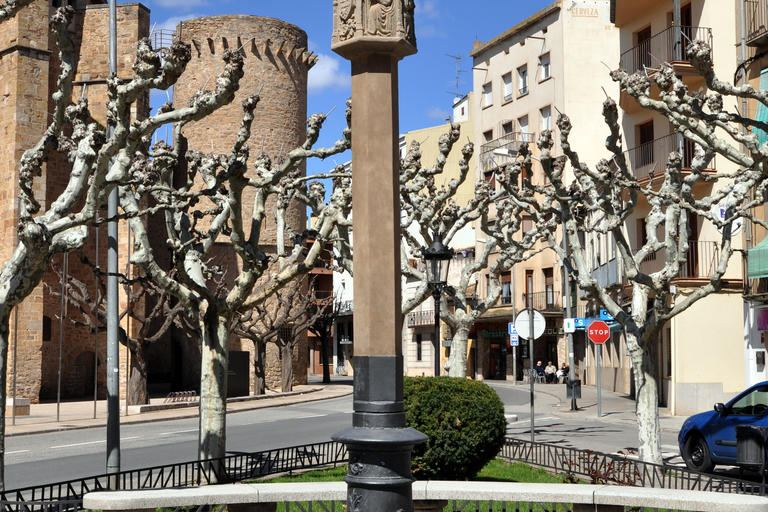

Visita · Tremp
Creu monumental de pedra que s'alça sobre un fust de secció pentagonal coronat per un capitell de la mateixa forma que sustenta una creu de pedra tallada, d'estil gòtic , esculpida a l'anvers amb…